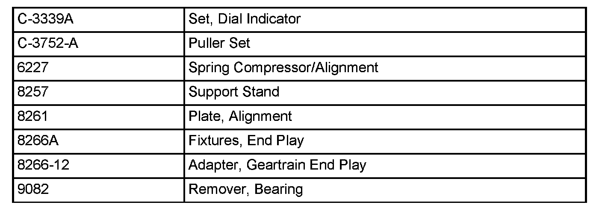
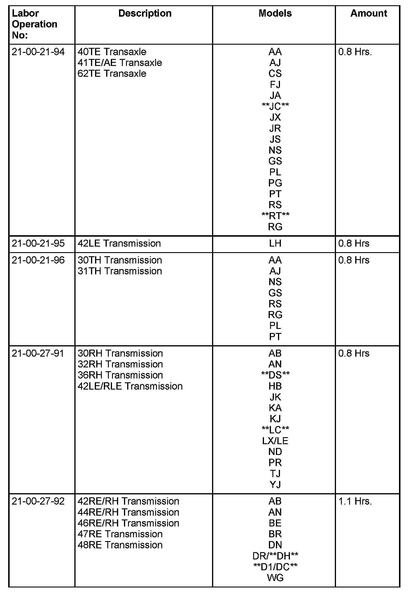
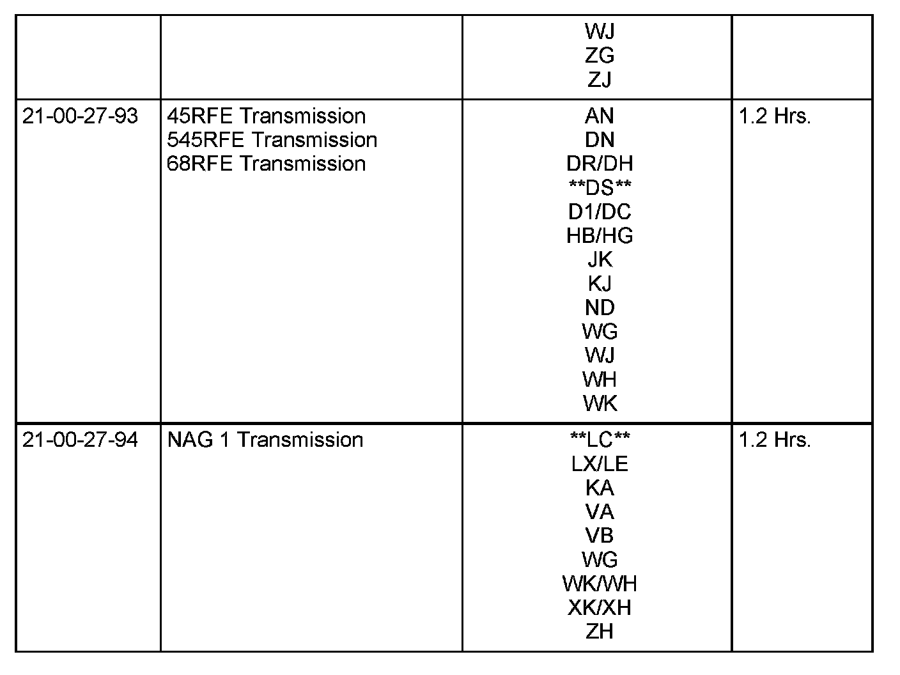

A/T - Repair/Replacement Guidelines: Overview
NUMBER: 21-021-08GROUP: Transmission
DATE: September 17, 2008
THIS BULLETIN SUPERSEDES TECHNICAL SERVICE BULLETIN 21-003-07, DATED FEBRUARY 9, 2007, WHICH SHOULD BE REMOVED FROM YOUR FILES. ALL REVISIONS ARE HIGHLIGHTED WITH **ASTERISKS** AND INCLUDE ADDITIONAL VEHICLES AND REFERENCE TO THE AS68RC and CVT TRANSMISSION.
NOTE:
**THE AS68RC (SALES CODE DG3) TRANSMISSION IS EXEMPT FROM THE DIAGNOSTIC TEARDOWN PROCEDURE. ALL REPAIR/REPLACE DECISIONS SHOULD BE MADE BASED ON WARRANTY POLICY IN PLACE AT TIME OF VEHICLE REPAIR.**
NOTE:
**THE CVT (SALES CODE DAV or DAW) TRANSMISSION IS EXEMPT FROM THE DIAGNOSTIC TEARDOWN PROCEDURE AND MUST NOT BE DISASSEMBLED. ONLY LIMITED EXTERNAL REPAIRS CAN BE MADE. ALL REPAIR/REPLACE DECISIONS SHOULD BE MADE BASED ON WARRANTY POLICY IN PLACE AT TIME OF VEHICLE REPAIR.**
SUBJECT:
Automatic Transmission Diagnostic Tear Down Procedure
OVERVIEW:
This bulletin provides a procedure to determine repair versus replacement of an automatic transmission assembly. Follow the proper repair procedure based on the transmission type. This procedure is to be used after the transmission has been removed from the vehicle.
Every replaced transmission assembly returned to Chrysler must include a properly completed Diagnostic Checksheet. This sheet must be attached to the transmission bellhousing. Refer to Warranty Bulletin D-06-08 for additional information.
MODELS:
1995 (AA) Spirit/Acclaim/LeBaron Sedan
1995 - 2003 (AB) Ram Van/Wagon
1995 (AJ) LeBaron Coupe/LeBaron Convertible
1997 - 2004 (AN) Dakota
1995 - 2002 (BR/BE) Ram Truck
2004 - **2008** (CS) Pacifica
1998 - 2003 (DN) Durango
2007 - **2009** (D1/DC) Ram Truck
2002 - **2009** (DR/DH) Ram Truck
**2009 (DS) Ram Truck**
1995 - 2000 (FJ) Sebring/Avenger/Talon
1996 - 2000 (GS) Voyager (International Markets)
2004 - **2009** (HB) Durango
2007 - **2009** (HG) Aspen
1995 - 2000 (JA) Cirrus/Stratus/Breeze
**2009 (JC) Journey**
2007 - **2009** (JK) Wrangler
2001 - 2006 (JR) Sebring Sedan & Convertible/Stratus Sedan
2007 - **2009** (JS) Sebring/**Sebring Convertible/Avenger**
1996 - 2000 (JX) Sebring Convertible
2007 - **2009** (KA) Nitro
2002 - 2007 (KJ) Liberty
2002 - **2007** (KJ) Cherokee (International Markets)
**2008 - 2009 (KK) Liberty**
**2008 - 2009 (LC) Challenger**
1995 - 2004 (LH) Concorde/Intrepid/Vision/LHS/New Yorker
/300M
2005 - **2009** (LX) 300/Magnum/Charger
2005 - **2009** (LE) 300C/300C (International Markets)
2005 - **2009** (ND) Dakota
1996 - 2000 (NS) Town & Country/Caravan/Voyager
2002 (PG) PT Cruiser (International Markets)
1995 - 2005 (PL) Neon
2001 - **2009** (PT) PT Cruiser
1997 - 2002 (PR) Prowler
2001 - 2007 (RS) Town & Country/Caravan/Voyager
**2008 - 2009 (RT) Town & Country/Grand Caravan **
**2008 - 2009 (RT) Town & Country/Grand Caravan (International
Markets)**
2001 - 2007 (RG) Voyager (International Markets)
1997 - 2006 (TJ) Wrangler
2002 - 2006 (VA) Sprinter
2007 - **2009** (VB) Sprinter
1999 - 2004 (WG) Grand Cherokee (International Markets)
2005 - **2009** (WH) Grand Cherokee (International Markets)
1999-2004 (WJ) Grand Cherokee
2005 - **2009** (WK) Grand Cherokee
2006 - **2009** (XH) Commander (International Markets)
2006 - **2009** (XK) Commander
1995 (YJ) Wrangler
1996 - 1998 (ZG) Grand Cherokee (International Markets)
2004 - **2008** (ZH) Crossfire
1996 - 1998 (ZJ) Grand Cherokee/Grand Wagoneer

SPECIAL TOOLS/EQUIPMENT REQUIRED:
POLICY:
Reimbursable within the provisions of the warranty.
NOTE:
These labor operation numbers are only to be used when repair exceeds 70% of the cost of transmission assembly replacement.
NOTE:
Returned transmissions received missing components are subject to warranty part return chargebacks. See Warranty Administration Manual, Parts Section, Warranty Parts Return pages P1 through **P12** for details.
NOTE:
Warranty repairs claiming any transmission replacement Labor Operation Number must include a completed diagnostic sheet. Refer to Warranty Bulletin D-06-08, available in TechCONNECT under:
efiles>Service>Warranty>CDJ Bulletins, for additional information. If the diagnostic sheet is not returned with the transmission assembly, the diagnostic tear down time allowance will be charged back.
NOTE:
The use of a Diagnostic time allowance and/or "00" time in place of one of the below Labor Operation Numbers does not eliminate the requirement to return a properly completed Diagnostic Sheet for a transmission replacement. See Warranty Bulletin D-06-08 for additional information.
CAUTION:
The diagnostic sheet is to assist DaimlerChrysler engineering in the analysis of returned units for root cause and corrective actions. Your diagnosis and findings are important and can assist in this analysis. Failure to return a properly completed sheet may result in a chargeback of $75.00. The chargeback for a transmission replaced that should have been repaired can result in complete chargeback of all parts markup and even complete claim chargeback.


TIME ALLOWANCE:
Disclaimer:
This bulletin is supplied as technical information only and is not an authorization for repair.